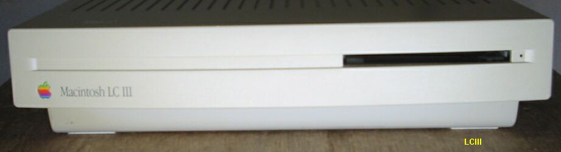

FPU-MC68882のジャンクボードからの取り外しとLCIIIへの取り付け

このLCIIIは、秋葉原で１万４千円ほどで入手しました。IICiよりは動作が 軽快で、ワープロ程度で使うなら、かなり満足できるものでした。写真の
右下、CPUの隣にFPUを取り付けるソケットがあります。FPUがなくても 特に困らないのですが、ベンチマークをとると、FPUエミュレーションと
いうことで、総合数値が低くでてきます。そこで、何とかFPUを付けて やりたいと思い、パーツショップで探してみたのですが、MC68882は、 あるにはあっても、もう１台のMACが買えてしまうほどの値段です。形状は
QFPパッケージで、足をソケットに入るように曲げて、切断しただけに見え ます。これなら別な方法として、ジャンクなボードからMC68882を外し
ヤスリで整形すれば何とかなりそうな感じです。そうです、 いらないIISiのNuBusアダプタにには、MC68882が付いています。 IISiは20MHzですが、LCIIIの25MHzでも動くだろうと信じてやった見ること
にしました。足を折ってしまわないよう気を付けて、ボードから切り取り、 ソケットに合うようにヤスリで足の余分な金属を削り取り、隣の足と接触し ないようドライバの先などで、足の感覚を調整したりして、FPUの完成です。
後は、取り付け方向に気を付けて、ソケットに押し込みます。 LCIIIは見事に起動しました。ノートンのsysteminfoで見ると、FPU MC68882
と表示されています。もちろんベンチマークもちょっぴり上がりました。 パソコンが、こんなラフな扱いでも動いてくれるのはうれしいですね。
68Kマッキントッシュのページに戻る